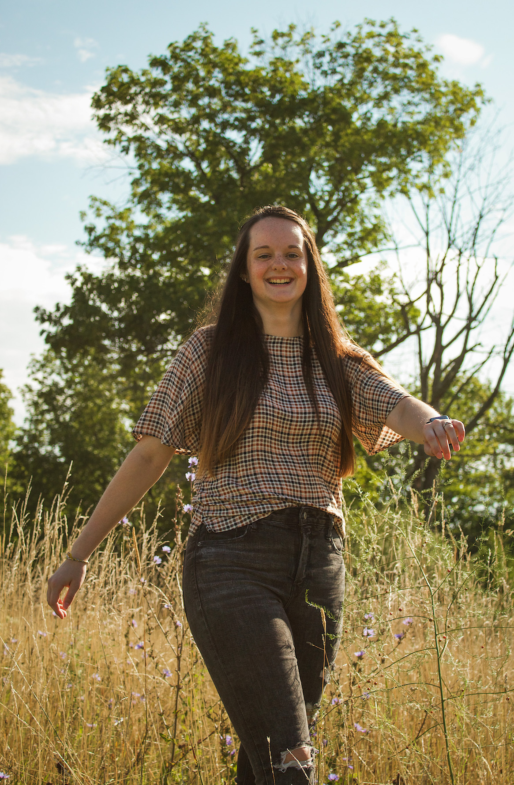
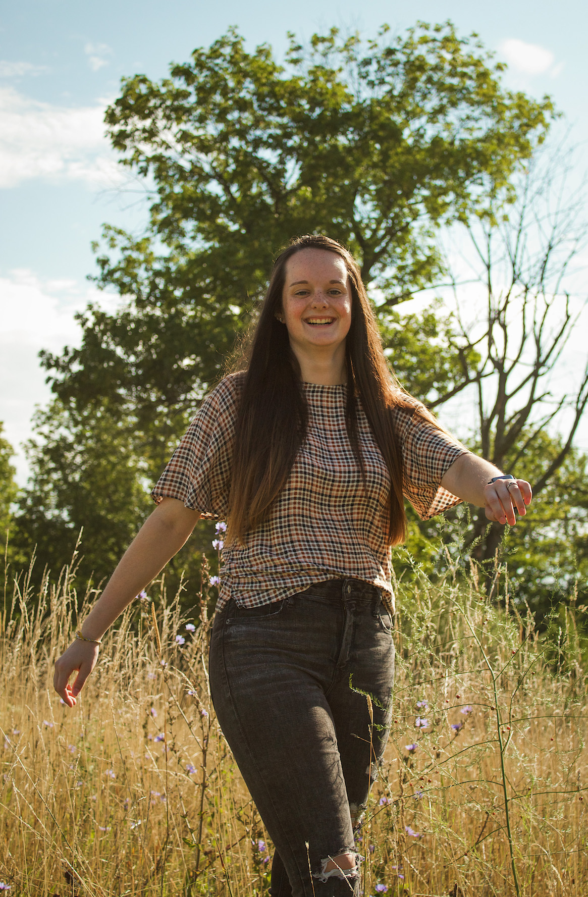
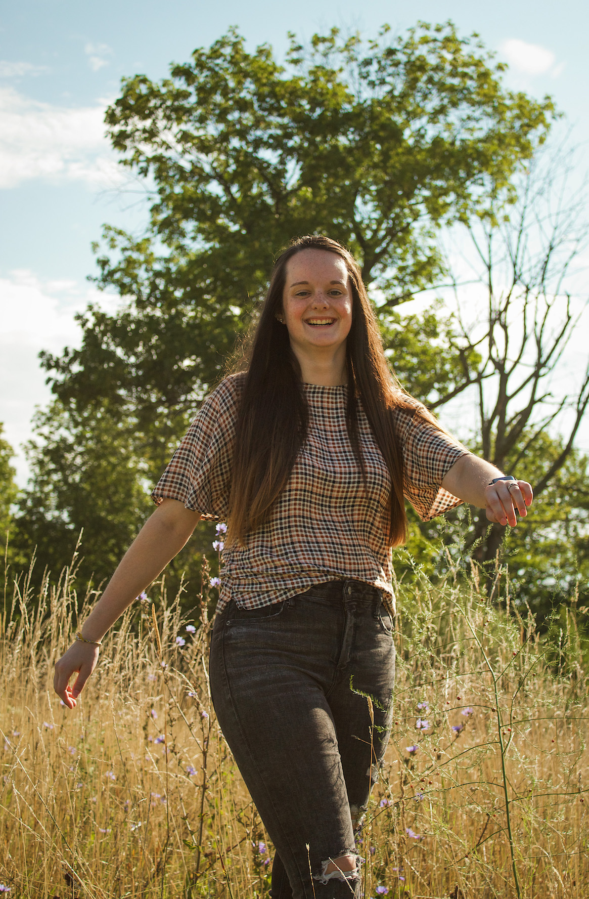

Previous Photoshoots
 



Here are a collage of photos that showcase some of my capabilities as a photographer. As I am still gaining experience, I have many individual photoshoots, multiple senior sessions, and a wedding that I have previously done. Along with those, I weekly serve on my church's photo team. This experience in itself helps me learn how to navigate difficult situations and to adapt to different environments as a photographer.
